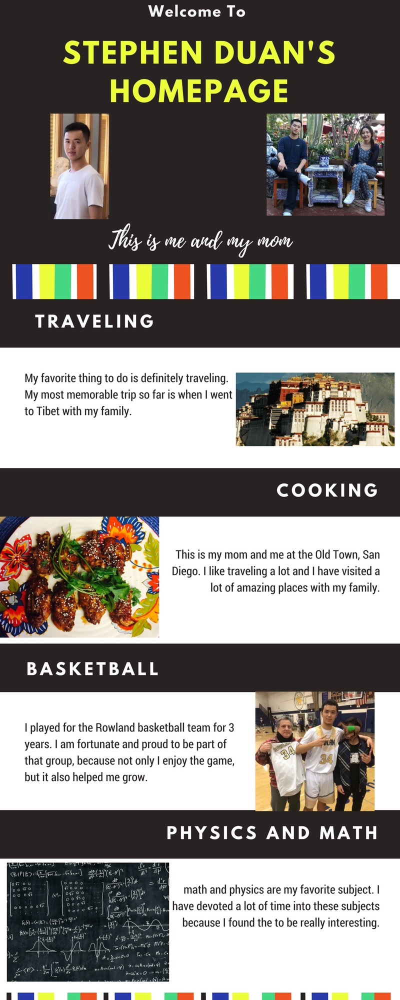

Home
Welcome to Stephen's website!
Hello Welcome to Stephen's Homepage. I am currently a senior at Rowland High School who is taking AP Computer Science Principles. I have created this website to furhter my understanding on the process of developing a website and also to let you learm more about me. On the home page, you can view my infographic. In the About Me page, you will learn more interesting facts about me. In My Portfolio, you can learn find all the work and projects that I have done in AP CSP. Have fun!
This is my infographic!
